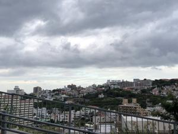

うるがいの話 ある日
最新: 霞が関官僚支配【うるがいの話 ある日】とは 一日だけのプログです
『うるがいの話』の最新一日だけのプログで、通信料が少なく経済的だ。カニの画像をクリックすると全ての日付が載る『うるがいの話』サイトを表示します
|
|
【うるがいの話】 うるがい(ｳﾙｶﾞｲ urugai)とは、『もずくがに』の名前でとても大きくなります。 |
|---|---|
|
|
【Got cat カミマヤーの話】 たながー（ﾀﾅｶﾞｰtanagaa）とは手長えびのことで、何種類かあり大きいのは車 エビぐらいになります。 |

|
【ぶながぁの話】 ぶながー(bunagaa)とは、赤い髪の毛、赤い身体、そして身長は１ｍ２０ｃｍ ぐらい、川の蟹を食べているの目撃された。場所は沖縄県国頭郡大宜味村のと ある村僕の隣近所に住んでいる爺さんから、聞いた話です。 |
|
|
【ギーマの話】 ギーマ(giima)とは、山原の里山に咲くスズランに似た、 花を付けます。実は食べられます、 気が付くと口の周りが紫になっています。 |
2021年11月28日 (日）霞が関官僚支配
15:57

海堂 尊『ゴーゴーAi アカデミズム闘争4000日』を完読する。三日連続深夜１
時過ぎまで起きる。そのためか、腰が痛い。
今朝の新聞に、『防衛局沈下の懸念 把握辺野古埋め立て３年前、２０１５年
業者報告も公表せず』の記事が載っていた。うむふむ、本で書いていたのと同
じジャン（詳しくは後日）。なお、この本は１９９９年から２０１０年の期間
を書いた記録で、その１１年の間に起きた世の中の出来事が書いてある。ＮＨ
Ｋ『シリーズ本土復帰５０年 第３回「スポーツに夢を乗せて」』の放送で辺
士名高校の全国３位の時の試合のシーンが放映されたいた。なぜか、過去を振
りかえるような出来事が多い週だった。
ついでなので、そのシーン僅か２４秒だがユーチューブに動画をアップした。
画質が悪いので残念だが。たしか、平均身長は１６８ｃｍのチームである。
なお、この動画は数日後に削除する（００７みたい、ははは）。
辺士名高校バスケット部
試合の様子（ユーチューブ）
１５時５１分 ビットコインの総資産 ￥１７，９３６